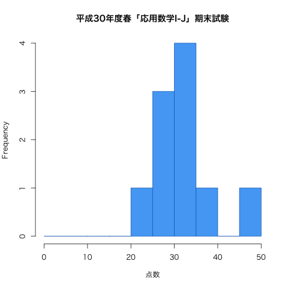

2018年度春学期 応用数学 I-J Advanced Mathematics I-J
月1限 9:10-10:50 | 2-274教室 | 対象：機械工学科2年生 Jプログラム
担当：佐藤 弘康（hiroyasu [at] nit.ac.jp | W1棟204 | 0480-33-7972）
本授業では、自然科学や工学の事象の正確な表現に必須となる数学的方法のうち、「微分積分学」について講義する。
多変数関数の微分・積分の基本的な概念を理解し、機械工学の諸分野において必要となる問題解決能力・計算力を身につける。
また, 本科目はJプログラムにおける学習・教育達成目標「C:科学と技術の基礎知識を習得している。(科学技術の知識)」の「(2) 機械工学に必要な自然科学の基礎を習得している。」に対応している.
| 第1回 | 4月 | 9日（月） | ガイダンス，多変数関数 第7章 §1.1 〜p.221 |
| 第2回 | 16日（月） | 多変数関数の極限と連続性 第7章 §1.1 p.221〜 , 偏導関数 第7章 §1.2 | |
| 23日（月） | （休講） | ||
| 第3回 | 5月 | 2日（水） | 高次偏導関数 第7章 §1.3 , 全微分 第7章 §1.4 |
| 第4回 | 7日（月） | 合成関数の微分 第7章 §2.1 | |
| 第5回 | 14日（月） | 陰関数の微分 第7章 §2.2 | |
| 第6回 | 21日（月） | 2変数関数の極値（判定方法について） 第7章 §3.2 | |
| 第7回 | 28日（月） | 2変数関数の極値（判定条件の証明） 第7章 §3.2 , 陰関数の極値 第7章 §3.3 | |
| 第8回 | 6月 | 4日（月） | 原始関数と不定積分 第1章 §2.1 第4章 |
| 第9回 | 11日（月） | 定積分の計算 第1章 §2.1, 2.2 第5章 §1.1, 1.2, 2.1, 2.2, 2.3 | |
| 12日（火） | 中間試験【補講：6時限, 2-274教室】（問題 | 解答 | 得点分布） | ||
| 第10回 | 18日（月） | 累次積分 第8章 §1.1 | |
| 第11回 | 25日（月） | 2重積分 第8章 §1.1 | |
| 第12回 | 7月 | 2日（月） | 積分順序の変更 第8章 §1.1 (p.259. 260) |
| 第13回 | 9日（月） | 体積と2重積分 第8章 §1.2 第8章 §2.2 | |
| 23日（月） | 補講日 | ||
| 30日（月） | 期末試験（問題 | 解答 | 得点分布） |
|  |
|